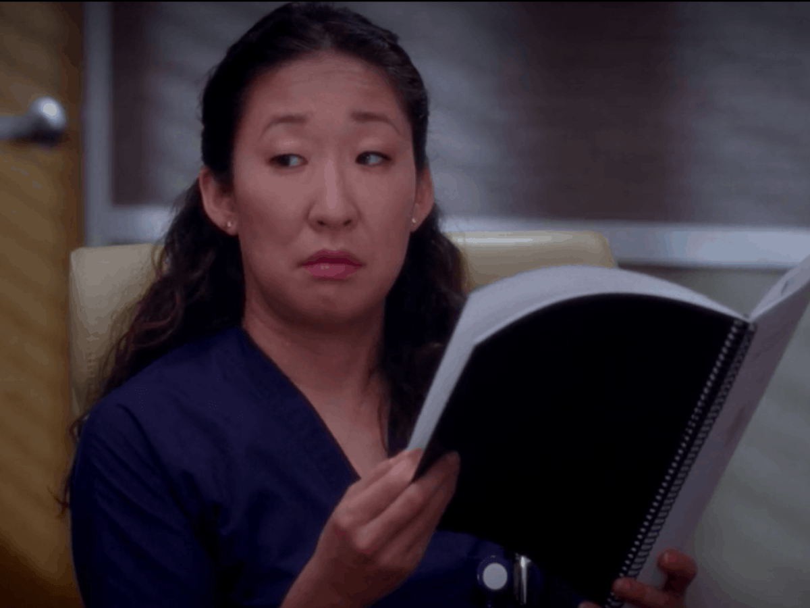

Quem ela é?
Cristina Yang é pesquisadora, diretora médica e diretora de cirurgia cardiotorácica do Klausman Institute for Medical Research, tendo sido treinada no Seattle Grace Hospital, no Seattle Grace Mercy West Hospital e no Gray Sloan Memorial Hospital . Ela estava noiva de Preston Burke e teve um relacionamento tumultuoso e casamento com Owen Hunt. Ela também é a pessoa de Meredith Grey.
Infância
Cristina é descendente de coreanos, criada no judaísmo (sua mãe se converteu ao se casar novamente) e é natural de
Beverly Hills, Califórnia. Embora judia, ela afirmou que não é religiosa.
Em seu baile de formatura, sua mãe a fez ir com o filho de sua melhor amiga, que Cristina disse ser um idiota. Ela
estava bem em fornecer um encontro para o garoto, mas assim que eles chegaram à festa, ele tentou se tornar sexual
com ela e tocá-la na frente de toda a escola com a tigela de ponche. Ele então vomitou em seu vestido porque estava
nervoso para tocá-la.
Sua mãe se casou com o padrasto de Cristina, Dr. Saul Rubenstein, um cirurgião oral, quando Cristina tinha três
anos. O pai biológico de Cristina morreu quando ela tinha nove anos em um acidente de carro; Cristina viu seu pai
sangrar antes que chegasse ajuda, tentando fechar seu peito com as mãos, para tentar estancar o sangramento.
Cristina sentiu seu último batimento cardíaco em suas mãos. Ela afirma que esse é o motivo pelo qual ela se tornou
médica, e muito provavelmente pode ser o motivo por trás de seu interesse pela Cirurgia Cardiotorácica.
Educação
Cristina é graduada pelo Smith College. Ela obteve seu Ph.D. em Bioquímica pela University of California, Berkeley, e ela obteve seu MD pela Stanford University School of Medicine, onde se formou em primeiro lugar na classe.
Personalidade
Cristina é incrivelmente focada e motivada (ainda mais do que as outras) e está sempre animada com a chance de começar
uma cirurgia. Extremamente competitiva, ela não deixa de roubar e sequestrar pacientes se isso significar uma cirurgia
emocionante. Cristina possui excelente habilidade cirúrgica, sendo a
interna com maior conhecimento médico. No entanto, ela tem dificuldade em transmitir seus sentimentos e não gosta
de ser tocada por alguém, incluindo sua mãe. Ela também tem modos ruins ao lado do leito e acha difícil ter empatia
pela maioria dos pacientes.
Cristina valoriza a lógica e o pensamento prático acima do raciocínio emocional, mas passou por várias situações
emocionais desde que se tornou estagiária. Ela foi descrita como fria, cortante e hardcore, que ela define como sua
"ponta" e a ajudou durante seu estágio, mas causou problemas emocionais em relacionamentos, como com Burke e George,
que a descreve como um "robô". Por causa da experiência traumática de ver seu pai morrer, Cristina é incapaz de lidar
com a perda emocional de pensar em perder seus entes queridos. Enquanto ela inicialmente lutava com o conceito de
expressar seus sentimentos, Cristina gradualmente se tornou mais confortável para compartilhar seus pensamentos íntimos.
Mesmo assim, ela ainda é considerada a menos emocional de todas as estagiárias.
Apesar de sua personalidade forte, quando Meredith estava inconsciente
após cair na água durante a crise da balsa, Cristina fugiu ao perceber que não poderia lidar com o fato de que sua
"pessoa" estava morrendo. Burke a encorajou a confrontar seus sentimentos, e ela irrompeu na sala de trauma e insistiu
que os médicos tentassem reviver Meredith novamente. Meredith logo acordou, e uma Cristina oprimida felizmente disse
a Meredith que ela se casaria com Burke, e Meredith era a única pessoa a quem ela queria contar. Ps.: Esse casamento não durou...
 Izzie conta a Cristina sobre seu câncer e pede que ela não conte a ninguém. Cristina tira todos os favores que pode
e a coloca com o melhor oncologista cirúrgico do estado de Washington, mas Izzie ignora, irritando Cristina. Ao ser
confrontada, Izzie fica apática em relação ao câncer, o que faz Cristina se perguntar por que ela contou a ela.
Enquanto ajudava Izzie, Cristina fica cada vez mais distraída no dia de sua cirurgia solo e, eventualmente, conta ao
centro cirúrgico sobre a doença de Izzie, incluindo Bailey e Alex.
Izzie conta a Cristina sobre seu câncer e pede que ela não conte a ninguém. Cristina tira todos os favores que pode
e a coloca com o melhor oncologista cirúrgico do estado de Washington, mas Izzie ignora, irritando Cristina. Ao ser
confrontada, Izzie fica apática em relação ao câncer, o que faz Cristina se perguntar por que ela contou a ela.
Enquanto ajudava Izzie, Cristina fica cada vez mais distraída no dia de sua cirurgia solo e, eventualmente, conta ao
centro cirúrgico sobre a doença de Izzie, incluindo Bailey e Alex.
Algumas Curiosidades
Ela foi a primeira a chamar o Dr. Shepherd de " McDreamy "; Quando Cristina fez sua cirurgia para gravidez ectópica, o Conselho de Cirurgia disse que ela tinha 28 anos e seu tipo sanguíneo era AB +; Ela foi a primeira personagem principal a engravidar no ar, mas nunca teve um filho. Izzy foi a primeira quando teve um filho aos dezesseis anos; Ela é disléxica. Ainda assim, ela conseguiu ser uma aluna nota A durante a faculdade e acabou se formando como a primeira da classe no Smith College, Berkeley e Stanford; Cristina ganhou a primeira cirurgia solo, mas não foi autorizada a realizá-la. Foi a primeira cirurgia solo onde todos os atendentes escolheram o mesmo residente. Ela então escolheu Alex para executá-lo; Ela prefere beber café do carrinho fora do hospital, em vez do café da lanchonete; Suas habilidades culinárias são um pouco questionáveis; Cristina odeia musicais; Ela adora vinho e tequila; Ela sempre tem dois brincos na orelha direita, mas apenas um na esquerda.